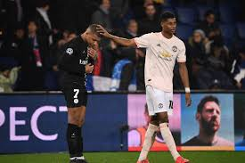

Paris Saint-Germain had two men sent off as they were beaten 2-1 by RB Leipzig at the Red Bull Arena in the Champions League on Wednesday night.
The French side went ahead through Angel Di Maria after six minutes, but then had a penalty saved. Christopher Nkunku equalised just before half-time, with Emil Forsberg putting the Germans ahead from the penalty spot after 57 minutes.
PSG midfielder Idrissa Gueye was sent off for two yellow cards, with defender Presnel Kimpembe also seeing red in stoppage time.
The result means Man Utd remain top of Group H, despite losing 2-1 at Istanbul Basaksehir, with PSG in third, three points off the top two qualification places with three games remaining.
Paris St Germain defender Presnel Kimpembe says complacency was to blame for the French champions' shock home defeat to Manchester United that saw them eliminated from the Champions League on Wednesday
"My explanation is that we were very complacent after the first leg at Old Trafford. It was not the same PSG team," said Kimpembe.
"We lost the aggressiveness and rage that had made the difference at Old Trafford. We were complacent and we took this game lightly."
PSG became the first team in Europe’s elite club competition to be eliminated after winning 2-0 away in the opening leg. It came two years after they were knocked out in the last 16 by Barcelona after losing 6-1 at the Camp Nou following a 4-0 home victory in the first leg.
Kimpembe said the defeat had been hard to take.
"It hurts, it hurts a lot," he added. "I feel disappointment and rage, just like the fans I have a hard time swallowing it."